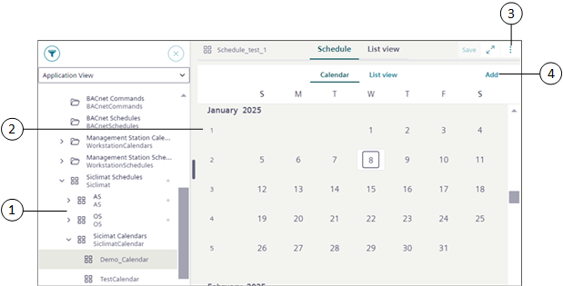
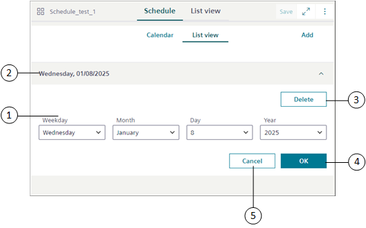

SICLIMAT Calendar
This section provides the background information for managing the SICLIMAT calendar in Flex Client.
The Schedules application in Flex Client allows you to view, edit, or add new SICLIMAT Calendar entries.
The System Browser displays calendar entries created in the Desigo CC Installed Client, those can be modified from the Flex Client. The modified calendar entries reflect in the Desigo CC Installed Client as well.
SICLIMAT Calendar Workspace
You can view, edit, or add new entries for the SICLIMAT calendar from the Calendar view and List view.

Item | Name | Description |
1 | System Browser | Displays the list of objects in the selected view. The System Browser displays the nodes created from the Installed Client. |
2 | Calendar | Displays the SICLIMAT calendar object in the Calendar view or List view. |
3 | | Displays the following options: Save as: Saves the SICLIMAT calendar entry with a new name. |
4 | Add | Allows you to add calendar entries of the following types: Date: Adds a calendar entry for a single day. |
List View

Item | Name | Description |
1 | Weekday, Month, Day and Year | Allows you to select the day, month, date and year from the respective drop-down list. |
2 | Date or Date range | Displays the details of the selected calendar entry. |
3 | Delete | Deletes the calendar entry. |
4 | OK | Saves the calendar entry for defined day. |
5 | Cancel | Cancels the calendar entry operation. |